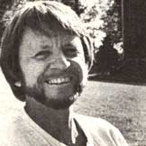
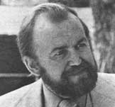

Newsworthies
Rohn Engh, People in the rural community are not as isolated from their markets as they may think. He finds good subject matter for his photography not that far from his rural home; Dr. Paavo Airola, He is an internationally known naturopathic physician who spreads the word of the three steps to well being through Airola's International Academy of Biological Medicine, Inc.; Cravens Wanlass, he worked on the inefficiency problem in electric motors, coming up with a two coil method whereby one is turned off after start up.
By the Mother Earth News editors
September/October 1978
Selected doin's of well-known MOTHER-types from around the world.
ROHN ENGH
More than a decade has passed since Rohn Engh, photographer, "stepped off the treadmill" and moved into the rolling hill country of western Wisconsin. "I thought it would be a snap to market photographs from my large, economy-sized mailbox. But I was wrong," Rohn admits. "So-by necessity-we took to gardening seriously, and doing more with less."
Still, Rohn kept his shutters snapping: "I didn't have to travel more than three miles from our farm for good subject matter. Children with their parent, pastoral scenes, schoolyard theatrics, medical emergencies . . . there was no end of material, even way up here at the end of the earth."
Interestingly enough, the "farmer with a camera" soon found that his rural mailbox was not a total loss after all. As word of Rohn's work spread, scores of publishers began to demonstrate their eagerness to buy his uncommonly natural photographs to illustrate textbooks, magazine articles, posters, and brochures. Not only local and regional firms clamored for the output of Engh's country camera, but Harper's, Woman's Day, Reader's Digest .. . even THE Mother Earth News (see MOTHER NO. 47, pages 55-58: "We Heat With Wood and Love It! " ).
Furthermore, as Rohn's lenswork grew in favor with art directors, so too grew the exotic nature of their demands. "I began to get photo requests for iguanas of Arizona or mountain climbing in Alaska. These appeals went into the wastebasket . . . until one day I realized that assignment I couldn't fill myself should be mighty valuable to other photographers-and to me-if I put them all together in a newsletter."
And so, in October of 1976, Rohn began to crank out The Photoletter-two mimeographed pages reporting up-to-the minute requirements from photo buyers-and mail it out to other professional shutterbugs.
The idea soon proved to be a lively seed that had fallen on fertile soil. Editors liked it because they saved bucks by not going through a photo agency. And photographers loved the publication because it saved them hours of research, querying, and pavement pounding. Nor did the newsletter hurt Rohn Engh's own business at all: "I found that by sharing what I know about the blossoming field of photo illustration I've not only discovered many new outlet . . . but also learned more about photography and its possibilities."
In it two years, The Photoletter's original subscription list of 14 has boomed to over 1,000, and the former monthly is now published once every two weeks in a four-page format. (Rohn says he'll send a free sample copy to interested photographers who write him in care of The Photoletter, Osceola, Wisconsin 54020. Subscriptions are $24 per year.)
Yep. Today's Rohn Engh is a far more settled character than the rootless young wanderer whose first photo story-"I Crossed the Sahara on a Motor Scooter"-appeared in a 1958 issue of the Satur day Evening Post. Engh now prefers to let his newsletter subscribers trek all over the country and the world for their pictures, while he and his cameras continue to record the life that Rohn has become part of right in Star Prairie, Wisconsin. Engh's portraits have been included in The Family of Children (Ridge Press' sequel to The Family of Man). And now Rohn is both author and illustrator of his own book-an outgrowth of what he's learned about growing his family's food-called A Very Simple Garden Book: Vegetables, recently published by Paul Eriksson, Inc.
So take heart, rural artist, writers, and other craftspeople. Maybe you're not as isolated from your markets as you thought. Rohn Engh lives out in the country too. And his mailbox marketing system, coupled with a loving eye for the land and its people-not to mention his share-a-chance philosophy-has made Rohn Engh one of America's most published photographers.-Harry T. White.
DR. PAAVO AIROLA
Everyone knows that "an ounce of prevention is worth a pound of cure" . . . but nobody really does a whole lot about raising the national awareness of this approach to health. Right? Wrong . . . if Dr. Paavo Airola is any example.
The internationally known naturopathic physician has recently created an effective means of spreading the word about what he has named the "three steps to well-being": proper mental attitude, vigorous exercise, and good nutrition. Airola's International Academy of Biological Medicine, Inc. accomplishes this feat by offering professional seminars in biological and nutritional medical therapies to both conventional and alternative doctors, who then pass that learning on to their patients. (IABM members range all the way from psychiatrists and family practitioners to chiropractors and iridologist, and more than half of them also belong to the American Medical Association.)
As a service to prospective patient, the Academy publishes an annually updated Directory which list it over 300 member physicians by state and country (in addition to the U.S.A., there are IABM practitioners in Sweden, Switzerland, Mexico, Japan, Germany, and Canada). The guide is available without charge upon request from International Academy of Biological Medicine, Inc., P.O. Box 31313, Phoenix, Arizona 85046.
"This little pamphlet puts the growing number of patient looking for someone who uses nutritional and alternative approaches to health and healing in contact with doctors who do exactly that in their practice," explains the Finnish-born nutritionist. "With its help you find the physician who is pursuing such studies and doctor and patient become a team. These doctors like to treat people who understand their perspective, and vice versa."
Although Dr. Airola has published 12 books on health in the past 10 years and is working on a thirteenth, he feels that his most important activity is serving as president of the IABM: "Once we reeducate a doctor, he will be able to guide thousands of others along the road ... with good nutrition and natural methods of healing."
What can you do if you're interested in robust health but there is no member of IABM in your area? Counsels Dr. Airola, "Read, listen to everything available on health and nutrition, and then make up your own mind. Use your common sense. Be skeptical of anyone who is representing himself as an expert and is trying to sell you a product."
"And create consumer demand! When you go to the supermarket, demand what you believe is best for you. If everybody would buy only those foods good for them, supermarket would be changed to health food stores in no time!"-Patsy Goosen.
CRAVENS WANLASS
According to California inventor Cravens Wanlass, most of the electric motors in use today waste tremendous amounts of energy. "They're built with oversized wire coils that are necessary only to get them started," he says. "But once the motors are running at their normal operating speeds, they simply don't need those heavy coils to keep going."
Electrical engineers, of course, have known about this inefficiency for years . . . but it took "Chris" Wanlass to come up with an inspiredbut-simple solution to the problem: an electric motor with two sets of coils. Both are activated during start-ups, but one switches off as the motor reaches its operating speed.
"This double-coil concept can allow us to operate most any electrical devicean air conditioner, window fan, refrigerator, conveyor belt, etc.-with 20% to 30% less electricity," says Mr. Wanlass. "In fact, if every common electric motor now operating in the United States were converted to my controlled-torque design, the country could realize an energy savings of more than 1.2 million barrels of oil per day!"
Scientists at the Southern California Edison power company and officials of several major corporations have fieldtested the new motor and agree that it works and that it does save energy. But the giants in the field-such as Westinghouse and General Electric-tend to look down their noses at the invention. They say it's not a new idea at all and that similar designs are already on the market.
"Bunk!" answers Mr. Wanlass. "If those companies knew about this concept years ago, why haven't they come forward and promoted it to the public? They're just afraid of looking foolish for not inventing such a simple, energyefficient electric motor before now."
What we seem to have here, then, is the classic "little guy with a better product battles the entrenched interests" story that pops up so often in the energy field. This time around, though, the tale has a happier than usual ending: While the major manufacturers of electrical equipment continue to "study" the Wanlass patent . . . the inventor himself is already beginning to turn out industrialsized controlled-torque motors at his new Tustin, California factory. And orders for the units are beginning to flood in from all over the world! We should all be hearing a lot more about Chris Wanlass during the months to come.-Johann Rush.
|
 |
 |
 |